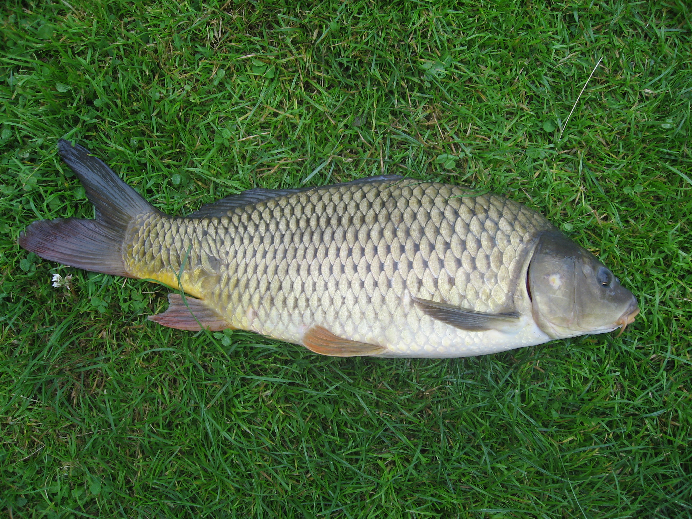
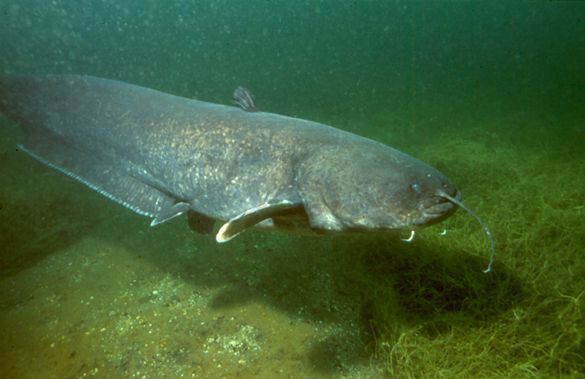
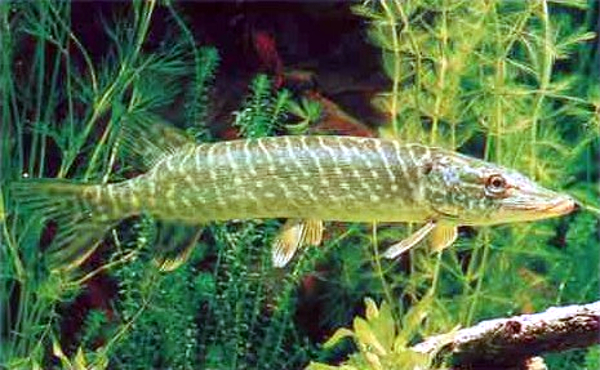
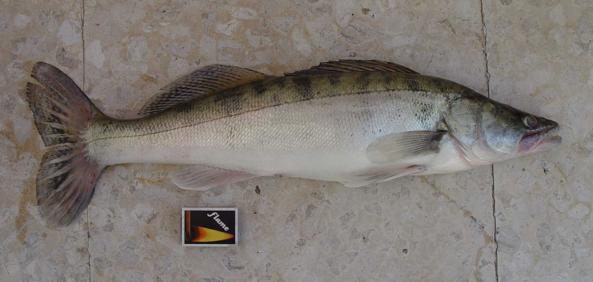
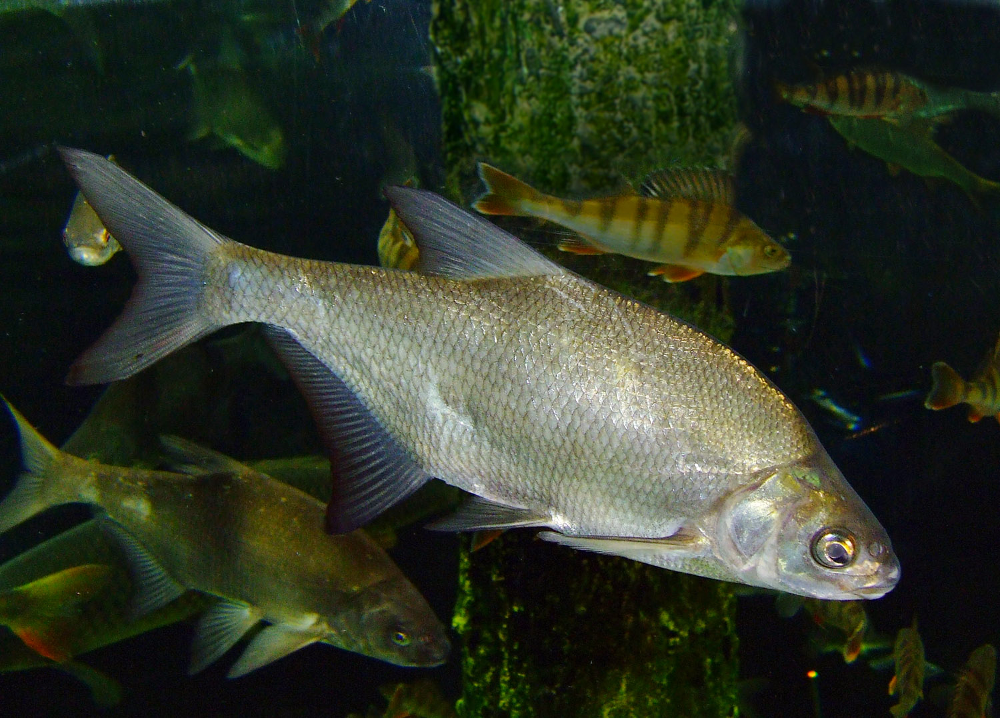

Vrste riba
Pregled karakteristika poznatih slatkovodnih riba.
Pogledaj vrsteŽivi svet naših voda
Upoznaj vrste riba, njihova staništa i raznovrstan život ispod površine Tamiša.
Istraži vrste riba




Pregled karakteristika poznatih slatkovodnih riba.
Pogledaj vrsteSaznaj više o reci i staništima koja pruža živom svetu.
Pročitaj višeImaš pitanje ili predlog? Pošalji nam poruku.
Piši nam